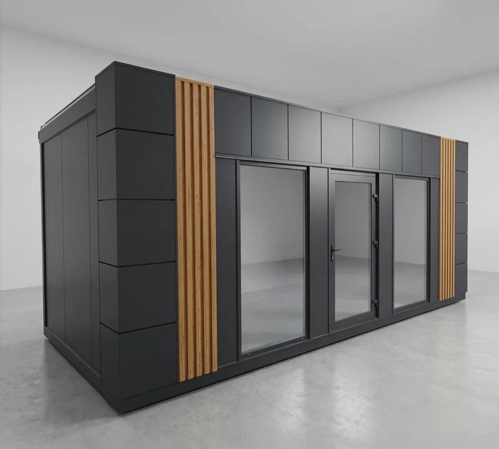
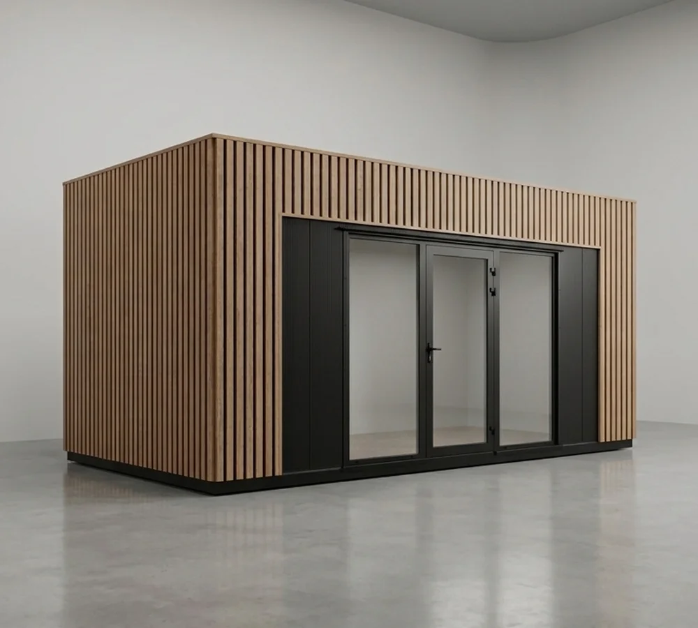
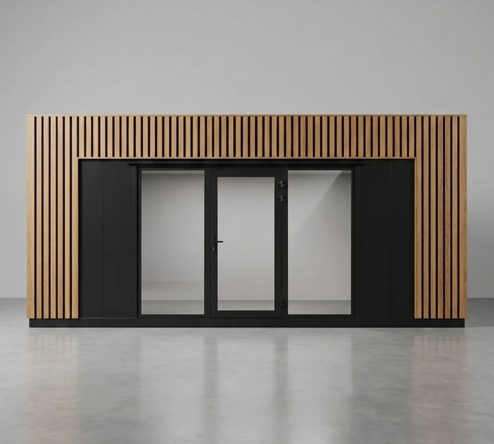
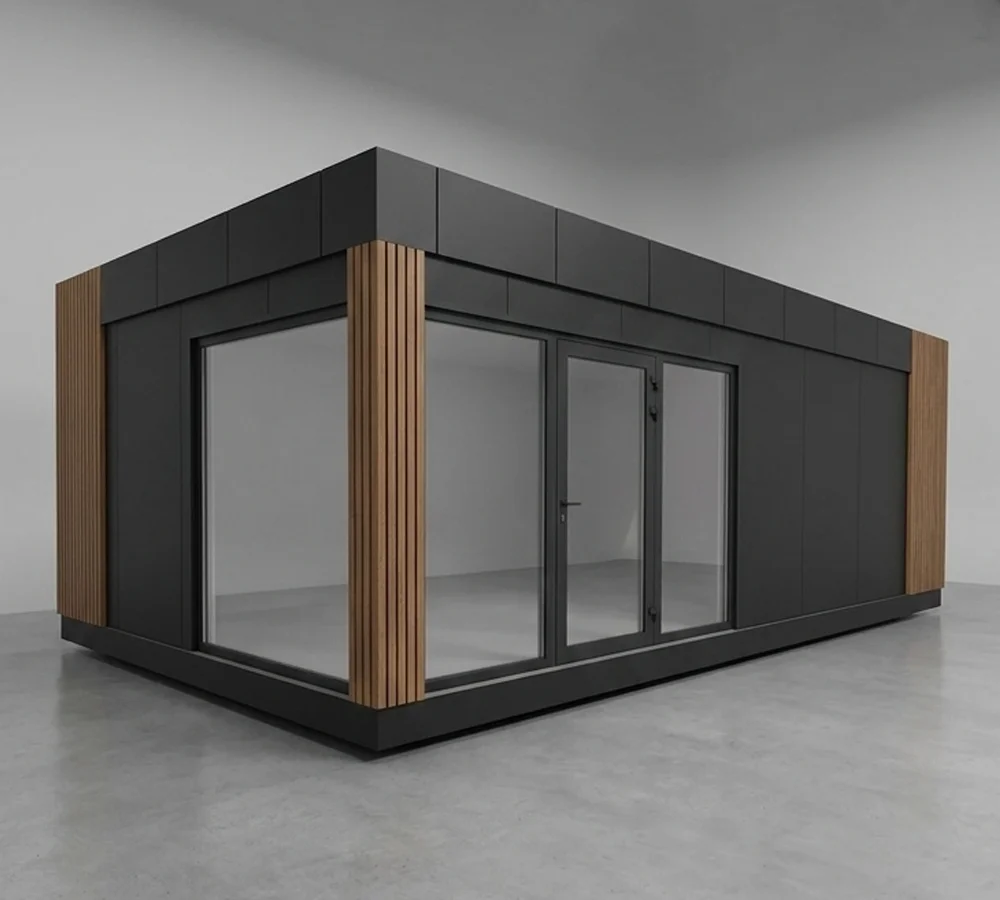
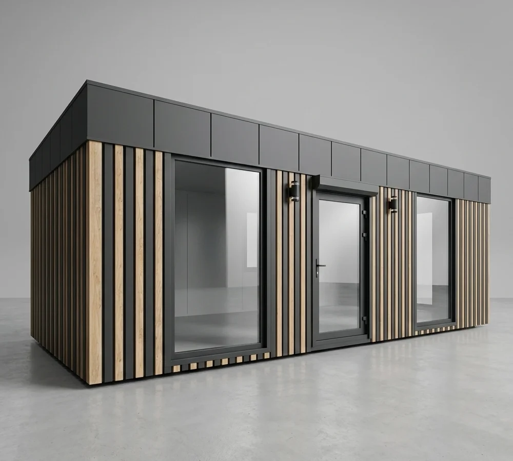
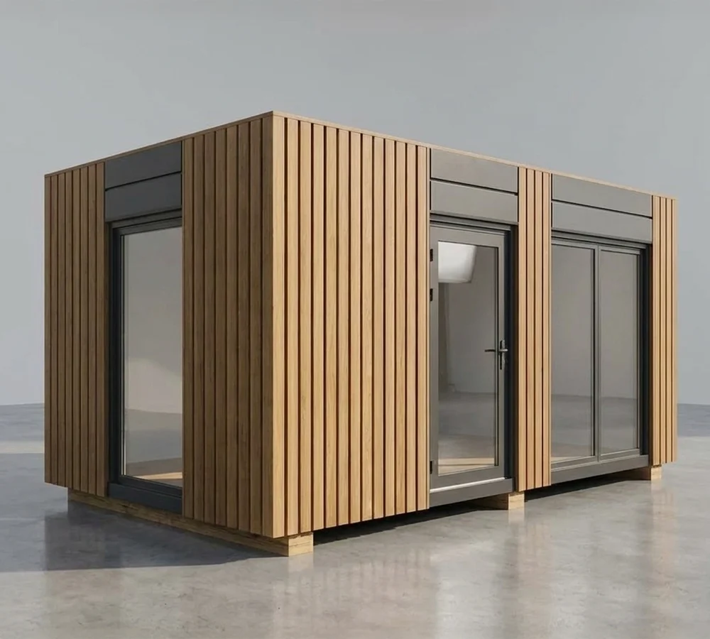

Województwo lubelskie
Dostarczamy pawilony modułowe w województwie lubelskie — Lublin, Chełm, Zamość, Biała Podlaska, Puławy i okolice. Transport z zakładu w Jasionce pod Jędrzejowem, montaż naszą ekipą. Transport i montaż wyceniamy osobno.
Nasz zasięg
Dojeżdżamy naczepą do każdej miejscowości w regionie. Transport i montaż są osobną pozycją wyceny — niezależnie od miejscowości.
Polecane modele
Te bryły sprawdzają się w regionie — od miasta po działki. Każdy model dopasujemy pod Twoją sytuację. Ceny netto, bez transportu i montażu, są w cenniku pawilonów.

Bryła z bocznymi akcentami i frontem
Zobacz model →
Klasyczny układ, symetryczne proporcje
Zobacz model →
Drewniana ramka, symetryczny front
Zobacz model →
Premium bryła z narożnymi oknami
Zobacz model →
Front showroomowy z trzema witrynami
Zobacz model →
Otwarta bryła z dużym przeszkleniem
Zobacz model →Dlaczego warto
Region lubelskie obsługujemy z zakładu w Jasionce pod Jędrzejowem — od Lublin po mniejsze miejscowości. Dostarczamy pawilony handlowe, biurowe, gastronomiczne i usługowe. Transport i montaż organizujemy osobno i wpisujemy je w wycenę przed podpisem umowy.
Pawilon modułowy STAGO to spawana rama stalowa, ściany z płyty warstwowej PIR 100 mm i stolarka aluminiowa. Klienci z Lublin i okolic dostają indywidualny projekt i realizację w 4–6 tygodni.
Niezależnie od tego, czy potrzebujesz punktu handlowego w Lublin, biura w Chełm, czy pawilonu pod Zamość — wycenę, w tym transport i montaż, dostajesz przed decyzją.
Proces
Pytania klientów z regionu
Transport i montaż wyceniamy osobno, przed podpisem umowy. Z zakładu w Jasionce pod Jędrzejowem do Lublin to około 300 km, naczepą około 4-5 godzin. Dojeżdżamy do każdej miejscowości w regionie.
Standardowo 4–6 tygodni od podpisania umowy do gotowego pawilonu na działce. Pierwsze 1–2 tygodnie to projekt, 3–4 tygodnie produkcja, dostawa w jeden dzień.
Tak. Ekipa przyjeżdża z naczepą i ustawia pawilon na przygotowanym podłożu. Wymagamy utwardzonego podłoża — pomagamy je zaplanować przed dostawą.
Pawilon do 35 m² wymaga zgłoszenia w urzędzie, nie pełnego pozwolenia na budowę. Powyżej 35 m² potrzebne jest pozwolenie. Przepisy są takie same w całej Polsce.
Tak. Zakład jest w Jasionce pod Jędrzejowem (woj. świętokrzyskie). Z Lublin to około 300 km.
Inne regiony
Wycena dla regionu
Powiedz, czego potrzebujesz i gdzie ma stanąć. Wycena darmowa, w 24 godziny, z osobną pozycją za transport i montaż.